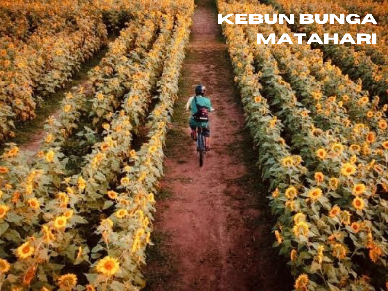
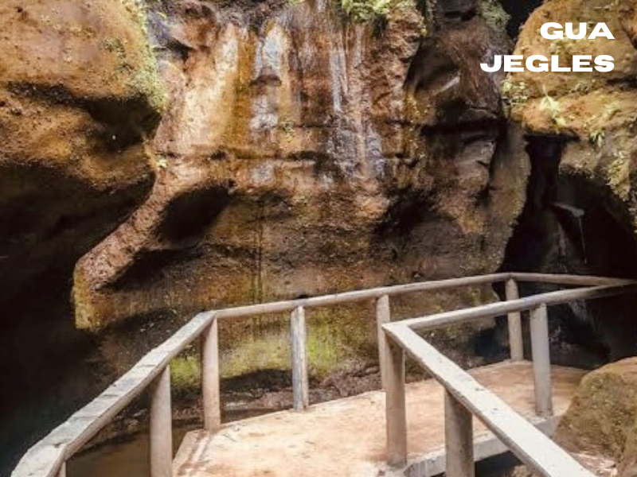
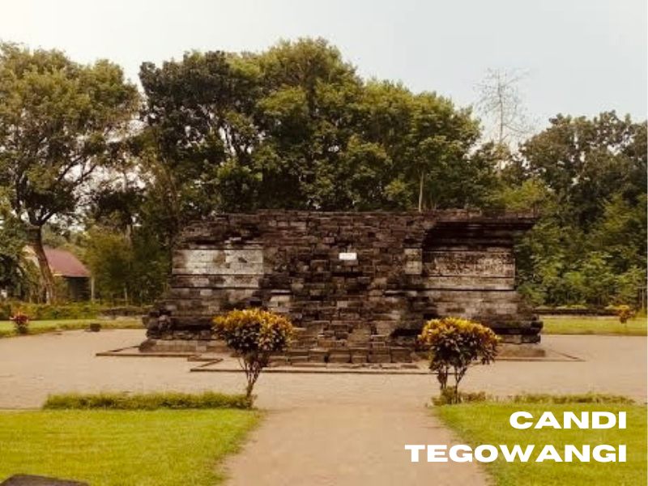
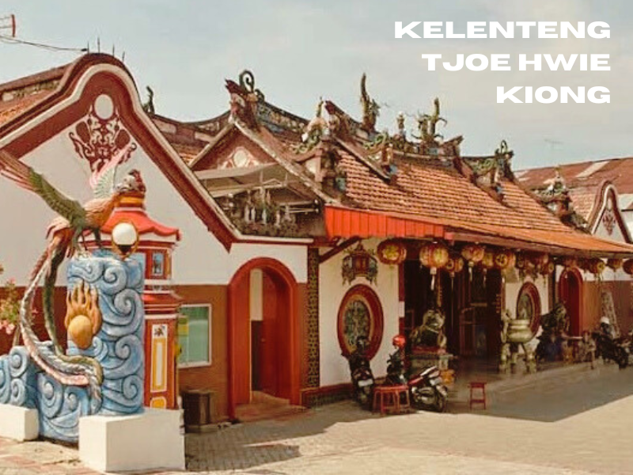
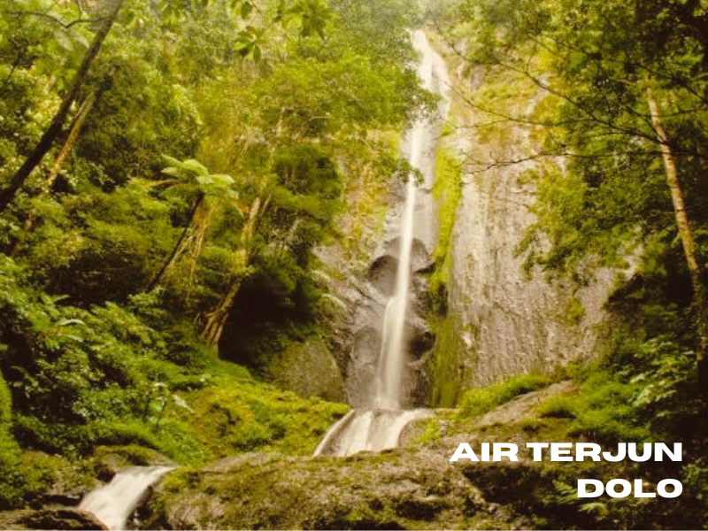
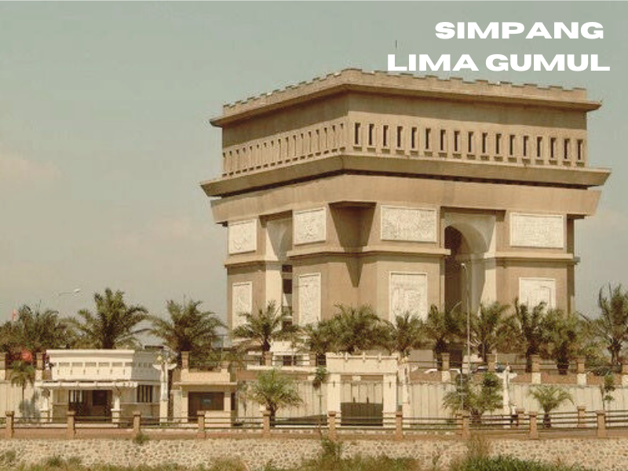
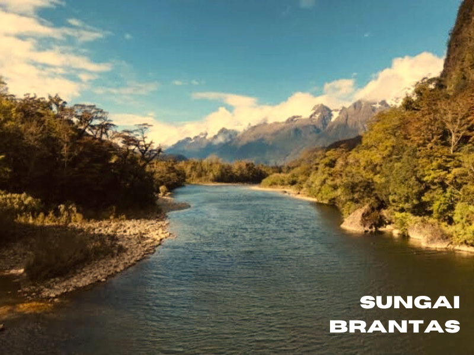

Home
profile
hometown
local food
tourist area
1/10

Jl. Mastrip No.59, Pojok, Kec. Mojoroto, Kabupaten Kediri, Jawa Timur
Jl. Gn. Kelud, Ringinrejo, Karangrejo, Kec. Ngancar, Kabupaten Kediri, Jawa Timur

Jl. Jegles, Bukaan, Keling, Kec. Kepung, Kabupaten Kediri, Jawa Timur
Jl. Krajan, Tambakrejo, Kec. Wonotirto, Kabupaten Kediri, Jawa Timur
Jl. Totok Kerot, Bulu Ps., Bulupasar, Kec. Pagu, Kabupaten Kediri, Jawa Timur

Jl. Candirejo, Tegowangi, Kec. Plemahan, Kabupaten Kediri, Jawa Timur

Jl. Yos Sudarso No.148, Pakelan, Kec. Kota, Kota Kediri, Jawa Timur

Dusun Besuki, Desa Jugo, Kecamatan Mojo, Hutan, Blimbing, Kediri, Kabupaten Kediri

Tugurejo, Kabupaten Kediri, Jawa Timur

Sungai Brantas
Here is a view photographs of the tourist area from my hometown